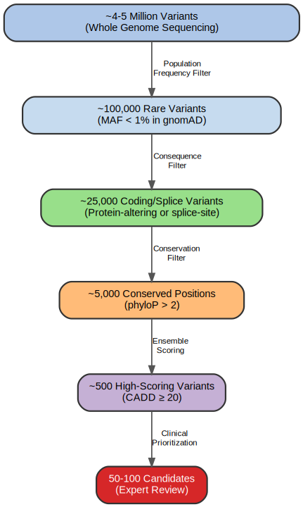
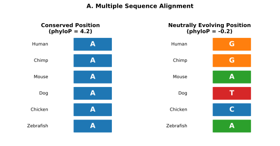
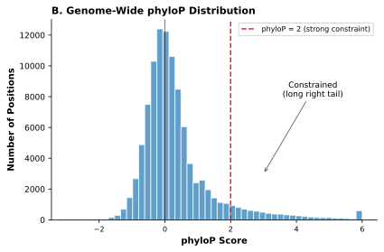
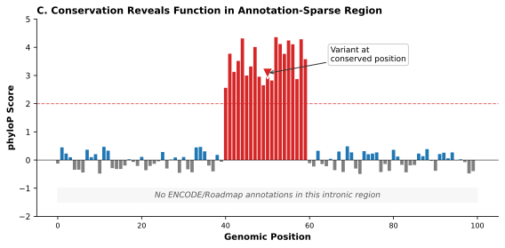
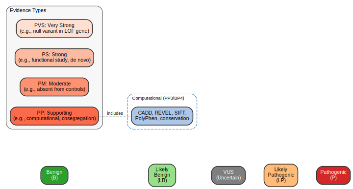
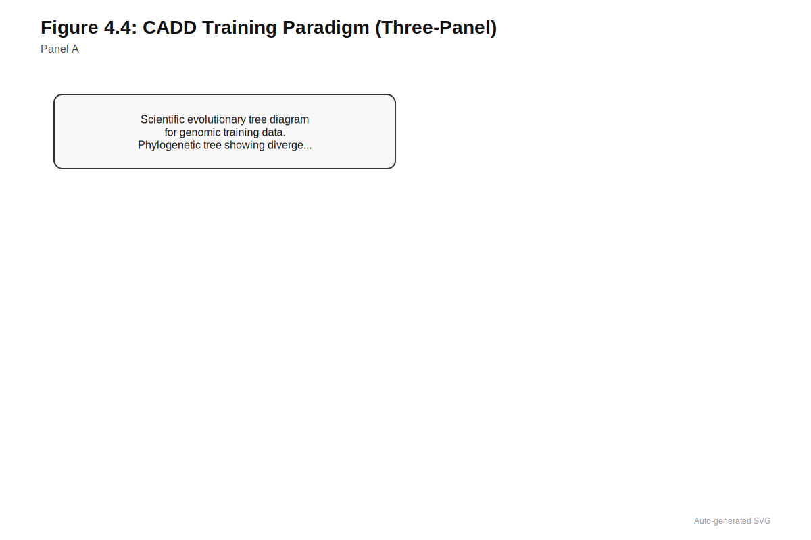
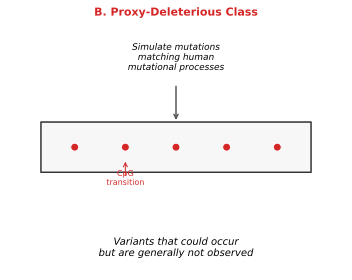
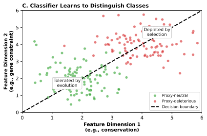
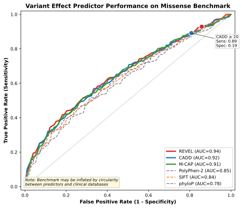

4 Classical Variant Prediction
Every classical predictor measures a proxy, and proxies can lie.
Estimated reading time: 40-50 minutes
Prerequisites: Understanding of genetic variants (SNPs, indels, missense/nonsense terminology) from Chapter 1; familiarity with population databases and allele frequency concepts from Chapter 2; basic awareness of GWAS principles from Chapter 3. No machine learning background required.
You will learn:
- How conservation scores quantify evolutionary constraint and why they serve as proxies for function
- How protein-level predictors (SIFT, PolyPhen-2) assess amino acid substitution severity
- How CADD pioneered evolutionary proxy training and feature integration for variant scoring
- Why the gap between what we measure and what clinicians need represents a fundamental limitation
- How circularity and ascertainment bias affect all variant effect predictors
Key insight: Every classical predictor measures a proxy for clinical pathogenicity, not pathogenicity itself. Conservation scores measure evolutionary fitness, not disease relevance. Protein predictors measure structural disruption, not clinical consequence. Understanding these gaps is essential for appropriate interpretation.
Whether you are interpreting variants for clinical diagnosis, training foundation models for VEP, or evaluating new prediction tools, you will encounter classical predictors constantly: SIFT, PolyPhen-2, and CADD appear in nearly every clinical variant report. Understanding what these tools actually measure (and what they miss) protects you from over-trusting their outputs and helps you recognize when foundation models genuinely improve over classical baselines versus when they merely inherit the same biases. After this chapter, you’ll be able to critically evaluate any variant predictor by asking: What proxy does it measure, and where does that proxy fail?
Conservation scores measure evolutionary constraint, not disease relevance. Protein-level predictors estimate structural disruption, not clinical pathogenicity. Splice site algorithms identify sequence motifs, not functional consequences. Every classical variant effect predictor measures something correlated with what clinicians actually need to know, not the thing itself: will this variant cause disease in this patient?
The gap between measurable signal and clinical question is irreducible. Evolutionary conservation reflects reproductive fitness, not human health; protein structure does not determine disease penetrance; and splice motifs do not guarantee splicing outcomes. Classical methods achieve what they achieve by combining multiple imperfect proxies, hoping that their convergence approximates clinical truth.
The conceptual foundations and practical methods that dominated variant interpretation before the foundation model era reveal both genuine insights and systematic blind spots. The trajectory from single-signal predictors through increasingly sophisticated ensemble methods traces a persistent gap: what we can measure differs from what clinicians need to know. Conservation scores like PhyloP and Genomic Evolutionary Rate Profiling (GERP) quantify purifying selection across evolutionary time, identifying positions where variation is depleted relative to neutral expectations. Protein-level tools like SIFT and PolyPhen-2 assess amino acid substitutions through sequence conservation and structural features. Splice predictors identify the sequence motifs that mark intron-exon boundaries. Each approach captures genuine biological signal, but each also fails in characteristic ways: conservation misses recently evolved human-specific functions, protein predictors cannot assess non-coding variants, splice algorithms miss cryptic sites and tissue-specific regulation.
The field’s response was to develop integrative methods that combine multiple signals into unified scores. CADD receives particular attention here because it introduced design patterns that recur throughout genomic machine learning: using evolutionary signals as proxy labels, training on large-scale genomic data, integrating dozens of diverse annotations, and precomputing scores genome-wide for downstream reuse. CADD and its successors, including REVEL, PrimateAI, and M-CAP, remain in active clinical use today. Understanding their construction and limitations illuminates both what classical methods achieved and why the field ultimately moved toward learned representations (Section 5.6 for learned representations, Chapter 7 for attention mechanisms, Section 14.2 for foundation model principles).

4.1 Conservation-Based Approaches
A clinical geneticist evaluating a novel intronic variant faces an immediate problem: no functional annotation exists for most of the genome, and no clinical database has seen this specific change before. The variant lies outside any protein-coding region, no regulatory element overlaps it, and the patient’s phenotype offers no clear mechanistic hypothesis. Yet one source of information spans the entire genome and predates any experimental annotation by billions of years. If a genomic position has remained unchanged across species separated by hundreds of millions of years of evolution, mutations at that position are likely to be deleterious. Natural selection has already performed the largest functional screen imaginable, running experiments across countless organisms over evolutionary time, and conservation scores quantify the results.
Before reading further, consider: if a position shows the same nucleotide across humans, mice, chickens, and fish (species that diverged hundreds of millions of years ago), what can you infer about that position? What assumptions does this inference require?
Conservation signals derive from the population variant catalogs described in Section 2.2.3, where patterns of variation across populations reveal which positions tolerate change. The variant calling quality from Section 1.3 directly affects which variants appear in constraint calculations, potentially biasing constraint metrics in regions with systematic calling errors.
For ML readers: Variants in protein-coding regions are classified by their effect on the amino acid sequence:
Synonymous (Silent): The nucleotide change does not alter the amino acid due to genetic code redundancy (e.g., both GGU and GGC encode glycine). Often assumed neutral, but can affect:
- Splicing (exonic splice enhancers/silencers)
- mRNA stability and structure
- Translation efficiency (codon usage bias)
Nonsynonymous (Missense): The change substitutes one amino acid for another (e.g., valine → glutamate). Effect depends on:
- Chemical similarity of amino acids
- Position in protein structure
- Functional importance of the residue
Nonsense: Creates a premature stop codon, truncating the protein. Usually loss-of-function, but may escape nonsense-mediated decay if near the last exon.
Frameshift: Insertion or deletion not divisible by 3, shifting the reading frame. Typically severe loss-of-function.
| Variant Type | Effect | Typical Consequence |
|---|---|---|
| Synonymous | Same amino acid | Usually neutral; can affect splicing |
| Missense | Different amino acid | Variable; depends on context |
| Nonsense | Premature stop | Loss-of-function |
| Frameshift | Altered sequence | Loss-of-function |
Key insight: Protein-level predictors (SIFT, PolyPhen) only assess missense variants. Other types require different prediction approaches.



4.1.1 Evolutionary Constraint Metrics
A clinical report arrives stating that a variant has “phyloP = 3.2” and “GERP = 4.5”—but what do these numbers actually mean? Without understanding the quantitative framework behind conservation scores, these values are opaque. The challenge is translating the qualitative intuition that “conservation implies function” into precise numerical values that can be compared across variants and combined with other evidence.
The logic of conservation is straightforward: if a position matters for survival or reproduction, mutations there will be removed by selection before they can spread through the population. Quantifying this signal requires comparing sequences across species to identify positions where substitutions occur less frequently than expected under neutral evolution. Conservation scores translate this evolutionary signal into numerical values that can inform variant interpretation.
PhyloP scores quantify the deviation of observed substitution rates from neutral expectation at individual positions (Siepel et al. 2005). The score is computed by comparing the observed pattern of bases at each alignment column against a neutral evolutionary model (typically fit to ancestral repeat sequences that are assumed to evolve without selective constraint). The choice of ancestral repeats for calibrating the neutral model is deliberate: these sequences arose from transposon insertions that have lost their original function and now accumulate mutations at rates reflecting only mutation pressure, without selective filtering. This provides a baseline against which constraint at functional positions can be measured. Positive phyloP scores indicate conservation, meaning evolution is slower than expected under neutrality. Negative scores indicate acceleration, suggesting faster evolution that may reflect positive selection. A phyloP score of 2 indicates that the observed base is approximately 100-fold more conserved than expected under neutrality, providing strong evidence that mutations at this position have been systematically removed by selection.
GERP takes a complementary approach by estimating rejected substitutions at each position: the number of substitutions that would have been expected under neutrality but are absent from the observed alignment (Davydov et al. 2010). Large positive GERP scores indicate strong constraint. For a position conserved across 30 mammalian species, a GERP score of 5 implies that approximately five substitutions were rejected by selection over mammalian evolution. This interpretation connects directly to the biological process of purifying selection but depends on accurate neutral rate estimation and alignment quality.
phastCons provides element-level rather than position-level conservation by identifying contiguous stretches of constrained sequence (Siepel et al. 2005). Using a hidden Markov model, phastCons classifies each position as belonging to a conserved or non-conserved state, then outputs the posterior probability of conservation. The resulting scores are smoother than position-level metrics, capturing functional elements that span multiple nucleotides even when individual positions show moderate conservation. This element-level view proves particularly valuable for identifying regulatory sequences where the overall constraint matters more than any single nucleotide.
| Metric | What It Measures | Scale | Interpretation |
|---|---|---|---|
| phyloP | Deviation from neutral evolution rate | Continuous; positive = conserved | Score of 2 = ~100x slower than neutral |
| GERP | Rejected substitutions | Continuous; higher = more constrained | Score of 5 = ~5 expected mutations removed |
| phastCons | Probability of conserved state | 0-1 probability | Score of 0.9 = 90% likely constrained element |
Conservation scores from phastCons and phyloP serve as foundational features throughout computational genomics. Integrative methods like CADD (Section 4.3) combine conservation with dozens of other annotations to score variant deleteriousness. Fine-mapping algorithms use conservation to weight prior probabilities when prioritizing causal variants within GWAS loci (Section 3.3). Yet conservation measures evolutionary fitness, not disease relevance, and variants pathogenic in humans may be invisible to cross-species constraint. This evolutionary proxy problem creates fundamental limitations for clinical interpretation, examined in Section 4.1.2.
4.1.2 What Conservation Measures Versus What Clinicians Need
Conservation scores answer the question: “Has this position been important for organismal fitness across evolutionary time?” Clinicians need to answer: “Will this variant cause disease in my patient?” These are related but fundamentally different questions.
Conservation scores measure evolutionary constraint: the degree to which a position has resisted substitution over millions of years. This is not the same as clinical relevance. A position can be evolutionarily constrained for functions unrelated to human disease, or clinically important despite modest conservation. The assumption underlying conservation-based interpretation is that positions under strong constraint are more likely to be functionally important and therefore more likely to cause disease when mutated. This assumption is often correct but not universally so.
The clinician wants to know: will this variant cause disease in my patient? Conservation provides indirect evidence: this position has been important for organismal fitness across evolutionary time. The gap between these questions creates interpretive challenges. A variant at a highly conserved position in a gene with no known disease association provides evolutionary evidence of functional importance but no direct path to clinical interpretation. Conversely, a variant at a modestly conserved position in a well-established disease gene may be clinically significant despite weak conservation signal.
A patient has a variant at a position with phyloP = 0.5 (weak conservation) in BRCA1, a well-established breast cancer gene. Another patient has a variant with phyloP = 4.0 (strong conservation) in a gene with no known disease associations. Which variant is more likely to be clinically actionable? What additional information would you need?
The BRCA1 variant is more likely to be clinically actionable despite weak conservation, because gene-disease association trumps position-level constraint when making clinical decisions. Additional information needed includes: variant type (missense vs. nonsense), population frequency, other computational predictions, family history, and whether the variant has been reported in clinical databases like ClinVar.
4.1.3 Clinical Application and Boundaries
When should a clinical laboratory trust a conservation score, and when should they treat it with skepticism? The answer depends on understanding both where conservation signals excel and where they systematically fail. A deep intronic variant with no regulatory annotations but strong conservation demands attention; a variant in an immune gene with weak conservation may still be pathogenic. Knowing when to rely on evolutionary evidence (and when to look elsewhere) separates effective variant interpretation from mechanical score-chasing.
Conservation scores prove particularly valuable for non-coding variant interpretation, where direct functional annotations are often incomplete or absent. A deeply conserved intronic position likely participates in splicing regulation, gene expression control, or other functional processes even if no explicit annotation overlaps it. Under ACMG-AMP guidelines for variant classification, strong conservation provides computational evidence (the PP3 criterion) supporting pathogenicity (Richards et al. 2015). A variant falling at a position with phyloP greater than 2 and GERP greater than 4 carries significantly more weight than one at an unconserved position, even when no other annotation is available. These scores remain central to clinical variant interpretation workflows, as examined in Chapter 28, where they contribute evidence alongside population frequency, functional studies, and segregation data.
The boundaries of conservation-based approaches are equally important to recognize, and these boundaries are not merely technical inconveniences but reflect fundamental gaps in what evolutionary signal can reveal. Conservation requires evolutionary time to accumulate signal. Recently evolved functional elements, including human-specific regulatory sequences and primate-specific genes, may show little conservation despite genuine function. A position can be functionally critical in humans yet unconserved because the function arose too recently for selection to leave a detectable signature. The fraction of the human genome showing evidence of human-specific function since the human-chimpanzee split (including thousands of human accelerated regions) presents exactly this challenge: important to human biology, yet invisible to conservation metrics (Hubisz and Pollard 2014).
Conservation patterns vary dramatically by functional context. Neural development genes tend to be highly conserved across vertebrates, while immune genes evolve rapidly under positive selection. Critically, lack of conservation does not prove neutrality: a position may be diverging under positive selection, or may serve lineage-specific functions absent in the comparison species.
Conservation scores also face technical challenges from alignment quality. In repetitive regions, segmental duplications, and rapidly evolving gene families, reliable alignments may be impossible to construct, leaving conservation scores undefined or unreliable precisely where variant interpretation is most difficult. The HLA region, immunoglobulin loci, and centromeric sequences are clinically important yet systematically difficult to assess by conservation. The regions most difficult to interpret computationally are frequently those of greatest clinical interest.
These boundaries do not diminish the value of conservation; they define where that value applies. Conservation provides information largely orthogonal to population frequency (which reflects recent human history rather than deep evolutionary constraint) and to functional genomics annotations (which capture biochemical activity rather than selective importance). Integrative methods such as CADD combine conservation with these other signals to achieve better performance than any single source. Protein language models, examined in Chapter 16, learn conservation-like signals directly from sequence data without requiring explicit alignments, potentially addressing some technical limitations while introducing their own assumptions about what constitutes functional constraint.
The ACMG-AMP framework classifies variants into five clinical tiers: Pathogenic, Likely Pathogenic, Variant of Uncertain Significance (VUS), Likely Benign, and Benign (Richards et al. 2015). Classification combines multiple evidence types at different strength levels (very strong through supporting). Computational predictions occupy the supporting tier through criteria PP3 (predicted damaging) and BP4 (predicted benign), meaning they can contribute to but not independently establish pathogenicity. The full evidence framework, including thresholds for upgrading computational evidence strength, is detailed in Section 18.5.3.

4.2 Protein-Level Predictors
A diagnostic laboratory receives exome sequencing results for a 45-year-old woman with early-onset breast cancer and a family history suggesting hereditary cancer syndrome. Among hundreds of rare variants, one stands out: a missense change in BRCA2 substituting glycine for arginine at a conserved position. Is this the explanation for her cancer, or an incidental finding? No previous case report exists for this exact variant. No functional assay has tested its effect. The question of whether this amino acid substitution disrupts BRCA2 function determines whether her siblings should be tested and whether she qualifies for PARP inhibitor therapy. The clinical stakes could not be higher, yet the evidence available is entirely computational. Protein-level predictors attempt to answer such questions by encoding biological intuition about which amino acid changes matter.
For a missense variant (amino acid substitution), what properties would you consider when predicting whether it disrupts protein function? Think about the amino acid itself, its position in the protein, and what you could learn from evolution.
4.2.1 SIFT: Sequence Homology as Functional Constraint
Conservation scores can identify constrained positions, but they cannot distinguish which substitutions at those positions are tolerated. A position might be highly conserved overall yet accept certain amino acid changes that preserve function. For missense variants specifically, the relevant question is not whether the position is constrained but whether the specific amino acid substitution disrupts function. SIFT addresses this distinction by examining which amino acids have been accepted at each position across evolutionary history (Ng and Henikoff 2003).
SIFT collects homologous protein sequences from diverse species, constructs a multiple sequence alignment, and examines which amino acids appear at each position across the alignment. Positions that are highly conserved (showing the same or similar amino acids across species) are predicted to be functionally important; substitutions introducing amino acids not observed at that position are predicted to be deleterious.
The method computes a normalized probability for each possible amino acid at each position based on the diversity observed in the alignment. The SIFT score for a substitution is the probability of observing the mutant amino acid, scaled by the position’s overall diversity. The scaling by position diversity serves a critical purpose: without it, highly variable positions would yield low scores for any substitution simply because no single amino acid dominates, while conserved positions would appear to tolerate nothing. The scaling ensures that scores reflect deviation from position-specific expectations rather than raw conservation. Scores range from 0 to 1, with low scores (typically below 0.05) indicating predicted damage. A SIFT score of 0.01 for a particular missense variant indicates that the mutant amino acid is rarely or never observed at that position across the sequence family, suggesting functional constraint has prevented its fixation throughout evolution.
Worked Example: Consider a leucine-to-proline substitution at position 285 in a highly conserved enzyme. SIFT examines the alignment of 500 homologous sequences and finds that position 285 contains leucine in 495 sequences, isoleucine in 4, and valine in 1. Proline never appears. The probability of observing proline at this position is essentially zero, yielding a SIFT score near 0, predicting the substitution as deleterious. The biological intuition: leucine sits in an alpha-helix, and proline would break the helix structure.
SIFT’s simplicity is both its strength and its limitation. The method requires only protein sequence information and a database of homologs; it makes no assumptions about protein structure, physicochemistry, or mechanism of damage. This generality allows application to any protein with sufficient homologs in sequence databases. For proteins with few homologs, young gene families, or positions with limited alignment depth, predictions may be unreliable. The method captures only the evolutionary signal present in the alignment, missing functional constraints that arose recently or affect only a subset of species.
4.2.2 PolyPhen-2: Integrating Structure and Sequence
SIFT’s reliance on sequence alone ignores substantial information about how amino acid substitutions affect protein function. A glycine buried in a protein’s hydrophobic core will disrupt structure differently than one on a surface loop. A substitution at a catalytic site matters more than one far from any functional region. PolyPhen-2 extends sequence-based prediction by incorporating protein structure features and amino acid physicochemistry, recognizing that the same substitution can have different consequences depending on its structural context (Adzhubei et al. 2010).
The method uses a naive Bayes classifier trained to distinguish disease-causing mutations from neutral polymorphisms based on a collection of sequence-derived and structure-derived features. The choice of naive Bayes reflects a principled tradeoff: although the “naive” independence assumption between features is biologically unrealistic (conservation and solvent accessibility are correlated), the classifier remains robust when features are redundant and performs well with limited training data. More complex models might overfit to the relatively small sets of annotated disease variants available when PolyPhen-2 was developed. The feature set includes sequence conservation (similar to SIFT) but adds several structural descriptors when three-dimensional structure data is available: solvent accessibility (whether the position is buried or exposed), secondary structure context (alpha-helix, beta-sheet, or random coil), and proximity to known functional sites. Solvent accessibility matters because buried residues must maintain hydrophobic packing to preserve protein stability, while surface-exposed residues face fewer constraints unless they participate in binding interfaces. Amino acid physicochemical properties inform predictions about whether substitutions are conservative or radical. The Grantham distance, a measure of biochemical dissimilarity between amino acid pairs based on composition, polarity, and molecular volume, contributes to assessing substitution severity (Grantham 1974). Where Grantham distance derives from physicochemical properties, BLOSUM matrices capture empirical substitution frequencies observed across evolutionarily related proteins (Henikoff and Henikoff 1992). A glycine-to-arginine substitution (Grantham distance of 125) represents a far more radical change than a leucine-to-isoleucine substitution (Grantham distance of 5).
PolyPhen-2 provides two models trained on different datasets: HumDiv, trained on disease-causing and neutral variants from protein sequence databases, and HumVar, trained on Mendelian disease mutations versus common human polymorphisms. The choice of training set affects score interpretation; HumVar produces more conservative predictions appropriate for clinical Mendelian disease variant classification, while HumDiv is more sensitive and may be preferable for research applications where missing a true positive is more costly than false positives.
PolyPhen-2 scores range from 0 to 1, with higher scores indicating greater predicted deleteriousness. The output includes qualitative classifications (benign, possibly damaging, probably damaging) based on score thresholds. A PolyPhen-2 score of 0.95 with a “probably damaging” classification indicates high confidence that the substitution disrupts protein function, though the clinical significance depends on additional evidence about the specific disease context.
| Aspect | SIFT | PolyPhen-2 |
|---|---|---|
| Input | Sequence only | Sequence + structure (when available) |
| Score range | 0-1 (low = damaging) | 0-1 (high = damaging) |
| Threshold | < 0.05 = damaging | > 0.85 = probably damaging |
| Strength | Works with alignment alone | Incorporates structural context |
| Limitation | Misses structural effects | Requires structure data for full power |
| Use case | Any protein with homologs | Best when structure available |
4.2.3 From Sequence to Function
A clinical report states that a variant is “probably damaging” according to PolyPhen-2 and “deleterious” according to SIFT. The patient’s physician asks: “So this variant causes disease?” The answer is more complicated than the scores suggest. A “probably damaging” designation means the substitution likely impairs the protein’s normal function, but whether that impairment causes the patient’s disease depends on factors these tools cannot assess.
PolyPhen-2, SIFT, and similar tools answer a mechanistic question: does this amino acid substitution disrupt protein function? They assess whether the new residue fits the structural context, whether the position tolerates variation across species, and whether the physicochemical change is drastic. These are genuine molecular insights. A “probably damaging” designation from PolyPhen-2 means the substitution likely impairs the protein’s normal function, but the clinical significance of that impairment requires reasoning that protein-level predictors cannot provide.
Protein language models like ESM-2 (Section 16.1) provide alternative approaches to variant effect prediction that learn evolutionary constraint from sequence alone, without explicit multiple sequence alignments. ESM-based variant scoring is examined in Section 18.2, where zero-shot prediction paradigms avoid the limitations of supervised training on biased clinical labels.
4.2.4 Boundaries of Protein-Level Prediction
Several fundamental boundaries constrain all protein-level predictors, and these boundaries are not merely technical inconveniences but reflect deep gaps in what sequence and structure analysis alone can reveal. Protein-level tools are restricted to missense variants; nonsense, frameshift, splice-altering, and non-coding variants lie entirely outside their scope. A patient’s most important variant may be intronic or synonymous, yet protein-level predictors have nothing to say about it. This constraint is absolute: these methods analyze amino acid substitutions and cannot be extended to other variant types without fundamental redesign.
For ML readers: How a genetic disease is inherited determines whether one or two mutant copies cause disease:
Autosomal Dominant: One mutant copy is sufficient to cause disease.
- Affected individuals typically have one affected parent
- 50% risk of transmission to each child
- Examples: Huntington’s disease, Marfan syndrome, many cancer predisposition syndromes (BRCA1/2)
Autosomal Recessive: Two mutant copies required (one from each parent).
- Parents are typically unaffected carriers
- 25% risk when both parents are carriers
- Examples: Cystic fibrosis, sickle cell disease, phenylketonuria
X-Linked: Gene located on X chromosome.
- Males (XY) are typically more severely affected (no backup copy)
- Females (XX) may be carriers or variably affected
- Examples: Duchenne muscular dystrophy, hemophilia
Why this matters for variant interpretation:
| Inheritance | Heterozygous (one copy) | Homozygous (two copies) |
|---|---|---|
| Dominant | Disease | Disease (often more severe) |
| Recessive | Carrier (healthy) | Disease |
A “damaging” variant in a recessive disease gene may be clinically benign in a heterozygous carrier. Variant effect predictors cannot distinguish these scenarios; they score molecular impact, not clinical consequence.
The terminology “gain-of-function” can mislead: it sounds beneficial, yet these mutations cause some of the most severe human diseases. A gain-of-function variant does not improve the protein; it creates aberrant activity that the cell cannot regulate. Protein-level predictors designed to detect structural disruption will often miss these variants entirely because the protein remains well-folded and active; it simply does something it should not.
Protein-level predictors estimate impact on protein function without specifying the mechanism or clinical consequence. A variant predicted to damage function might impair enzymatic activity, disrupt protein folding, eliminate a binding interface, or alter stability. The clinical relevance depends on which function is affected and whether the phenotype results from loss of function or gain of function. A predicted-damaging variant in a tumor suppressor behaves very differently from one in an oncogene, yet protein-level predictors provide no information about this distinction. The same high score can indicate completely different clinical implications depending on biological context.
In FGFR3, gain-of-function mutations cause the receptor to signal constitutively, driving achondroplasia by suppressing bone growth. In PIK3CA, activating mutations produce uncontrolled cell proliferation. In ion channels like SCN1A, gain-of-function can cause epileptic encephalopathy through neuronal hyperexcitability. These variants may preserve or even enhance protein structure and activity, precisely the opposite of what conservation-based predictors flag as damaging. A perfectly folded protein with enhanced catalytic activity will score as “tolerated” by methods designed to detect disruption, yet its clinical consequences may be devastating. Loss-of-function and gain-of-function mutations in the same gene can cause entirely different diseases: loss of RET function causes Hirschsprung disease (failed neural crest migration), while gain of RET function causes multiple endocrine neoplasia (tumor predisposition). Protein-level predictors cannot distinguish these mechanisms because they assess structural perturbation, not the direction of functional change.
These tools also provide no information about inheritance mode, penetrance, or expressivity. A strongly predicted-damaging variant in a gene with high tolerance to heterozygous loss may be clinically benign in carriers. Protein-level predictors cannot distinguish between a variant causing severe disease in homozygotes and one causing no disease at all when heterozygous. This distinction becomes critical when counseling families, where the mode of inheritance fundamentally changes recurrence risk and management recommendations.
For all readers: These clinical genetics terms describe why the same variant causes disease in some carriers but not others:
Penetrance: The probability that a person carrying a pathogenic variant will actually develop the associated disease.
- Complete penetrance (100%): All carriers develop disease (e.g., Huntington’s disease)
- Incomplete/reduced penetrance (<100%): Only some carriers develop disease (e.g., BRCA1 mutations have ~70% lifetime breast cancer risk)
- Age-dependent penetrance: Disease probability increases with age
Expressivity: The range of severity among individuals who do develop disease. Even with complete penetrance, some carriers may have mild symptoms while others have severe manifestations.
Why this matters for variant interpretation:
- A variant with high predicted deleteriousness may cause no disease if penetrance is low
- Unaffected family members can carry pathogenic variants (reduced penetrance)
- Variant effect predictors measure molecular disruption, not penetrance; a “damaging” score tells you nothing about whether the carrier will develop disease
- Population databases (gnomAD) may contain carriers of pathogenic variants who have not yet manifested disease or have incomplete penetrance
The gap: VEP scores predict functional impact; clinical outcomes require additional information about inheritance mode, penetrance, and genetic background.
Protein-level predictors inherit the training data biases present in their underlying databases. Disease mutations in training sets are enriched for severe, early-onset Mendelian conditions with clear inheritance patterns. Variants causing subtle effects, incomplete penetrance, or complex phenotypes may be systematically mispredicted. The well-studied genes that dominate training data may not generalize to poorly characterized genes where variants are most difficult to interpret.
SIFT and PolyPhen-2 remain widely used in clinical practice and serve as features within more sophisticated ensemble methods. Their scores appear in diagnostic reports, contribute to ACMG-AMP classification criteria, and inform variant prioritization in research and clinical pipelines. Understanding their construction and limitations is essential for appropriate interpretation.
4.3 CADD Framework
The protein-level predictors and conservation scores examined above each capture one aspect of variant function, yet clinical interpretation requires weighing multiple lines of evidence simultaneously. A variant might fall in a conserved region, alter a moderately constrained amino acid, and overlap a predicted enhancer. How should these signals be combined? More fundamentally, how can we train a predictor when curated pathogenic variants number in the hundreds of thousands while the genome contains billions of possible mutations? These questions expose a fundamental tension: the variants we most need to interpret (rare, novel, never before seen) are precisely those for which training labels do not exist.
CADD addressed these challenges by reframing variant effect prediction as a large-scale machine learning problem (Kircher et al. 2014; Rentzsch et al. 2019). The key insight was not better feature engineering or more sophisticated classification, but rather a reconceptualization of the labeling problem itself. Instead of training directly on small sets of known pathogenic versus benign variants, which are scarce and biased toward certain genes and variant types, CADD contrasts variants that have survived purifying selection in the human lineage with matched simulated variants that could have occurred but did not. This evolutionary proxy strategy transforms the labeling problem, yielding millions of training examples where curated datasets provide thousands.
CADD’s breakthrough was not algorithmic sophistication but creative problem reframing. By using evolutionary proxy labels (observed vs. simulated variants) instead of clinical labels, CADD transformed a problem with thousands of training examples into one with millions, at the cost of measuring evolutionary tolerance rather than clinical pathogenicity directly.
4.3.1 Evolutionary Proxy Training and Label Sources
The conceptual foundation of CADD rests on constructing training labels from evolutionary signal rather than clinical curation. The method builds two proxy classes of variants that serve as training labels, each designed to approximate a category that cannot be observed directly. Understanding these label sources is essential because the same proxy labeling strategies reappear throughout genomic machine learning, including in the foundation models discussed in Chapter 14 and Chapter 8.



CADD trains on “proxy-neutral” variants (observed in humans) versus “proxy-deleterious” variants (simulated but not observed). Why might this be more powerful than training on known pathogenic versus benign variants? What are the tradeoffs?
The proxy-neutral class consists of variants that have been tolerated by purifying selection. CADD draws these from sequence differences that arose on the human lineage since the split from chimpanzees and became fixed or nearly fixed in modern humans. These are identified by their derived allele frequency: alleles that differ from the inferred ancestral state (typically determined by comparison to chimpanzee and other great ape sequences) and are present at very high frequency in human populations. Because these derived alleles have persisted over millions of years of evolution, most are presumed to be neutral or only weakly deleterious. This is not a perfect proxy: some observed alleles are genuinely pathogenic, particularly those with incomplete penetrance, late onset, or context-dependent effects. The proxy-neutral class is, on average, substantially enriched for tolerated alleles relative to a random sample of possible mutations.
The proxy-deleterious class is constructed by simulating mutations across the genome according to realistic mutational processes. The simulation matches local sequence context (typically using trinucleotide frequencies to capture the strong dependence of mutation rates on flanking bases). CpG dinucleotides, for example, have elevated mutation rates due to spontaneous deamination of methylated cytosines, and the simulation accounts for this by generating more CpG transitions. Regional variation in mutation rates, driven by factors including replication timing and chromatin state, is similarly incorporated.
The logic underlying this construction is subtle but powerful. Simulated variants represent changes that could plausibly occur under human mutational processes but are generally not observed at high frequency in population databases. The proxy-deleterious class as a whole is enriched for alleles disfavored by selection, because the set of possible mutations includes many that disrupt conserved elements, alter protein function, or perturb regulatory sequences. By contrasting this set with the proxy-neutral class (high derived allele frequency variants that survived selection), CADD learns to recognize the annotation signatures that distinguish variants under purifying selection from those that have been tolerated.
This proxy labeling strategy has important implications. CADD does not learn to distinguish pathogenic from benign variants directly; it learns to distinguish tolerated-by-evolution from possible-but-not-observed. The assumption is that variants depleted by selection are enriched for functional effects and therefore enriched for disease relevance. This assumption is often correct but introduces a systematic gap between what CADD measures (evolutionary tolerance) and what clinicians need (disease causation).
4.3.2 Feature Integration
Conservation scores measure evolutionary constraint. Protein-level predictors assess amino acid substitution severity. Regulatory annotations mark biochemically active regions. Each signal captures genuine biology, but no single annotation captures the full complexity of variant function. A missense variant in a constrained gene might be tolerated if it falls in an unconserved loop region; a synonymous variant might be pathogenic if it disrupts splicing. The power of CADD lies in learning how these heterogeneous signals interact, upweighting annotations that distinguish proxy-deleterious from proxy-neutral variants and downweighting those that do not.
CADD integrates more than 60 features, far exceeding what explicit combination rules could accommodate. Gene model annotations describe the local transcript and coding context of each variant. The most fundamental is the predicted sequence consequence: whether a variant is synonymous, missense, nonsense, frameshift, splice-site disrupting, or located in untranslated or intronic regions. Distance to exon-intron boundaries and proximity to canonical splice sites provide additional context. Gene-level attributes including constraint metrics (pLI, LOEUF from gnomAD) quantify how tolerant each gene is to damaging variation; these metrics are described in detail in Section 2.9.
The gene-level constraint metrics used by CADD derive from a fundamental concept introduced in Section 2.9: haploinsufficiency. Most genes tolerate heterozygous loss because a single functional copy produces sufficient protein for normal function. Haploinsufficient genes are different; they require both copies to maintain adequate protein levels, making heterozygous loss-of-function variants pathogenic. A pLI approaching 1.0 indicates that loss-of-function variants are nearly absent from healthy individuals. By incorporating these gene-level constraint metrics, CADD can weight identical variants differently depending on whether they occur in dosage-sensitive or dosage-tolerant genes.
CADD draws on three families of evidence. Evolutionary constraint from phyloP, GERP, and phastCons provides the conservation signals described earlier; incorporating multiple metrics computed from different alignments captures complementary aspects of selective pressure. For coding variants, amino acid substitution predictions from SIFT and PolyPhen-2 assess structural and functional disruption, supplemented by physicochemical properties, Grantham distances, and domain annotations from Pfam. Non-coding variants receive context from ENCODE and Roadmap Epigenomics annotations capturing chromatin accessibility, histone modifications, and transcription factor binding.
Additional features capture local sequence context (GC content, CpG density), genomic architecture (segmental duplications, repetitive elements), and chromosomal position. The model learns how to weight and combine these heterogeneous signals from the data rather than from expert specification.
The feature engineering approach reaches a performance ceiling because manually designed features encode only what biologists already know. This limitation motivates the shift to learned representations examined in Section 5.6 for tokenization strategies and Section 9.3 for foundation model features. The contrast between hand-crafted features and learned representations illuminates the paradigm shift toward foundation models discussed in Section 14.1.
4.3.3 Model Architecture and Scoring
This section explains the PHRED scaling used for CADD scores. If the formula is unfamiliar, focus on the interpretation: higher scores indicate more extreme predicted deleteriousness, with each 10-point increase representing a 10-fold enrichment.
Raw classifier outputs are not directly interpretable as probabilities or biological effect sizes. A clinician presented with a support vector machine decision value has no intuitive understanding of what that number means. To address this, CADD defines PHRED-scaled scores based on the rank of each variant among all possible single-nucleotide substitutions in the reference genome. A scaled score of 10 indicates that a variant falls in the top 10% of predicted deleteriousness. A score of 20 indicates the top 1%, and a score of 30 indicates the top 0.1%. This rank-based transformation ensures comparability across CADD versions and provides immediate interpretability: a clinician can understand that a score of 25 places this variant among the most extreme 0.3% of possible mutations without needing to understand the underlying classifier.
Suppose CADD’s classifier assigns a raw score to a missense variant in BRCA1. To convert this to the interpretable scaled score, CADD ranks this variant against all ~8.6 billion possible single-nucleotide substitutions in the reference genome.
Step 1: The classifier produces a raw score (e.g., 2.34 on the SVM decision boundary).
Step 2: CADD determines where this score ranks among all possible variants. If this variant’s raw score places it at the 99th percentile (more extreme than 99% of possible variants), it receives a scaled score of 20.
Step 3: The PHRED formula: scaled score = \(-10 \times \log_{10}(\text{percentile rank})\)
| Raw Percentile | Calculation | Scaled Score |
|---|---|---|
| Top 10% (0.10) | \(-10 \times \log_{10}(0.10)\) | 10 |
| Top 1% (0.01) | \(-10 \times \log_{10}(0.01)\) | 20 |
| Top 0.1% (0.001) | \(-10 \times \log_{10}(0.001)\) | 30 |
| Top 0.03% (0.0003) | \(-10 \times \log_{10}(0.0003)\) | ~35 |
Each 10-point increase represents a 10-fold enrichment in predicted deleteriousness. A variant with a scaled score of 25 is rarer (more extreme) than 99.7% of all possible substitutions.
CADD’s classifier operates on the high-dimensional feature vector assembled for each variant. The original CADD model (v1.0) used a linear support vector machine trained to discriminate proxy-neutral and proxy-deleterious variants based on approximately 30 million training examples. The choice of a linear model was deliberate and pragmatic: with tens of millions of training examples and dozens of features, a linear classifier is computationally tractable while capturing the main structure of the classification problem. More fundamentally, the proxy labeling strategy means training labels are inherently noisy: the proxy-neutral class contains some deleterious variants, and the proxy-deleterious class contains some neutral ones. A simple linear model is less likely to overfit to this label noise than a complex nonlinear model, which might learn to memorize spurious patterns in the noisy labels rather than the generalizable structure that distinguishes evolutionary constraint from neutrality. Subsequent versions (v1.1 onward) transitioned to logistic regression, which offers comparable discriminative performance while providing native probability outputs and faster scoring of new variants (Rentzsch et al. 2021). Version 1.7 expanded the feature set to include protein language model scores and regulatory predictions from deep learning models (Schubach et al. 2024).
| CADD Score | Percentile | Clinical Interpretation |
|---|---|---|
| 10 | Top 10% | Weak evidence; many benign variants here |
| 15 | Top 3% | Modest evidence; consider with other factors |
| 20 | Top 1% | Moderate evidence; commonly used filter threshold |
| 25 | Top 0.3% | Strong evidence; most known pathogenic missense variants |
| 30 | Top 0.1% | Very strong evidence; enriched for severe effects |
Remember: CADD scores represent evolutionary tolerance, not clinical pathogenicity. A score of 30 does not mean “pathogenic”—it means “evolutionarily unusual.”
In clinical laboratories, CADD scaled scores commonly serve as filters to enrich for potentially pathogenic variants. Typical thresholds range from 15 (top 3%) to 20 (top 1%) or higher. Variants with scores at or above 20 are considered moderately high deleteriousness candidates, while scores at or above 30 are frequently interpreted as strongly enriched for functional impact. A diagnostic pipeline might use CADD greater than or equal to 20 as an initial filter, reducing 25,000 exome variants to several hundred candidates for expert review. These filters serve as prioritization tools that reduce the variant burden to a manageable number rather than as definitive pathogenicity calls.
4.3.4 Evolutionary Proxy Problem
CADD’s training signal derives entirely from evolutionary history: variants that survived natural selection versus those depleted by it. This creates a fundamental mismatch with clinical questions. Evolution optimizes for reproductive fitness across populations and timescales; clinical genetics asks whether a specific variant causes disease in a specific patient.
The mismatch manifests in predictable ways. Constraint varies across tissues and developmental stages, but CADD assigns a single genome-wide score. A variant in a deeply conserved neural enhancer receives a high score regardless of whether the patient presents with a cardiac or neurological phenotype. The constraint is real, but its clinical relevance depends on context CADD cannot assess.
More fundamentally, purifying selection only removes variants that reduce fitness before or during reproductive years. Late-onset diseases like Alzheimer’s or many cancers exert minimal selective pressure; variants causing these conditions may show little evolutionary depletion despite clear pathogenicity. Gain-of-function mutations present an even sharper challenge. A variant that creates a novel toxic function has no evolutionary precedent to deplete; CADD’s framework cannot recognize pathogenic mechanisms that evolution never encountered.
These limitations are not failures of implementation but consequences of the proxy relationship between evolutionary constraint and disease causation. CADD measures what evolution preserved and eliminated. Whether that corresponds to clinical pathogenicity depends on whether the disease mechanism falls within evolution’s purview.
4.4 Other Ensemble Methods
The clinical geneticist focused exclusively on rare missense variants in Mendelian disease faces a different optimization problem than the researcher screening the entire genome for regulatory variants. CADD’s genome-wide generality may sacrifice accuracy within specific variant classes, accepting modest performance everywhere to achieve coverage anywhere. For diagnostic laboratories where missense variants in known disease genes dominate the caseload, specialized ensemble methods offer an alternative: models trained directly on curated disease variants, optimized for the specific task rather than general prioritization. This tension between generality and specialization recurs throughout computational biology, and different clinical contexts demand different tradeoffs.
Ensemble principles for combining multiple predictors connect to the deep ensemble approaches for uncertainty quantification examined in Section 24.4.1. Integration strategies that combine classical scores with foundation model predictions are examined in Section 18.4.
4.4.1 REVEL
A missense variant in a known disease gene presents a narrower interpretive challenge than an arbitrary variant anywhere in the genome. The variant is protein-coding, the gene has established disease associations, and the question is specifically whether this amino acid substitution is pathogenic. This focused scope permits a different training strategy than CADD’s evolutionary proxy approach.
REVEL represents a missense-specific ensemble predictor widely used in clinical laboratories (Ioannidis et al. 2016). Rather than training on evolutionary proxy labels, REVEL directly discriminates pathogenic missense variants (curated from HGMD and other disease databases) from rare putatively neutral missense variants observed in population datasets.
REVEL integrates predictions from a panel of individual tools: SIFT, PolyPhen-2, PROVEAN, MutationAssessor, FATHMM, GERP++, phyloP, and phastCons, among others. A random forest model learns to combine these scores, weighting each according to its discriminative power for the pathogenic versus neutral classification. The training set is carefully constructed to avoid label contamination, excluding variants present in both disease and population databases.
REVEL scores range from 0 to 1, with higher values implying greater pathogenicity likelihood. Common interpretation thresholds treat scores above 0.5 as supporting evidence for pathogenicity, with scores above 0.75 providing stronger evidence. REVEL is restricted to missense single-nucleotide variants, making it more specialized than CADD but often more accurate within its scope. This specialization reflects a deliberate choice: by giving up coverage of non-coding and structural variants, REVEL gains the ability to train on directly relevant labels rather than evolutionary proxies.
4.4.2 M-CAP
Diagnostic laboratories evaluating potential Mendelian disease variants face asymmetric consequences for errors. Calling a benign variant pathogenic can lead to unnecessary surgeries, psychological burden, and inappropriate cascade testing of family members. Missing a pathogenic variant delays diagnosis but typically permits later reclassification as evidence accumulates. This asymmetry argues for prioritizing specificity over sensitivity in clinical settings.
M-CAP addresses specifically the challenge of distinguishing pathogenic from benign rare missense variants in Mendelian disease contexts, with explicit attention to this asymmetry (Jagadeesh et al. 2016). The method uses gradient boosting on a feature set including conservation scores, protein structure features, and amino acid properties.
M-CAP was explicitly designed to minimize false positives while maintaining reasonable sensitivity. The developers tuned their classifier to achieve less than 5% false positive rate on known pathogenic variants, accepting some reduction in sensitivity as a tradeoff. This design philosophy differs from methods that balance sensitivity and specificity equally, reflecting M-CAP’s intended use in diagnostic settings where false positive pathogenicity calls have serious consequences.
A clinical laboratory is evaluating tools for a rare disease diagnostic pipeline. They need high specificity (few false positives) because false pathogenic calls lead to unnecessary interventions. Which of CADD, REVEL, or M-CAP would you recommend for their primary filter, and why?
M-CAP is the best choice for this use case because it was explicitly designed to minimize false positives (high specificity) at the cost of some sensitivity. REVEL offers high accuracy for missense variants but balances sensitivity and specificity equally, while CADD provides genome-wide coverage but may have more false positives within specific variant classes.
4.4.3 Comparison and Selection
A clinical laboratory must choose which computational predictors to incorporate into their diagnostic pipeline. Should they use CADD for its universal coverage, REVEL for its missense accuracy, or M-CAP for its low false-positive rate? The wrong choice can mean missing pathogenic variants or overwhelming clinical reviewers with false alarms. Understanding what each method optimizes for (and what it trades away) is essential for matching tools to clinical context.
No single ensemble method dominates across all variant types and clinical contexts. CADD provides the broadest coverage (genome-wide, all variant types) but may sacrifice accuracy within specific variant classes to achieve this generality. REVEL often outperforms CADD on missense-only benchmarks, reflecting its focused training objective. M-CAP prioritizes specificity over sensitivity, appropriate for clinical settings where avoiding false positives is paramount.
| Method | Coverage | Training Labels | Key Strength | Key Limitation |
|---|---|---|---|---|
| CADD | All variants, genome-wide | Evolutionary proxy | Universal applicability | Measures evolutionary tolerance, not pathogenicity |
| REVEL | Missense only | Curated pathogenic vs. neutral | Higher accuracy for missense | Cannot score non-coding variants |
| M-CAP | Rare missense | Pathogenic vs. benign | Low false positive rate | Lower sensitivity than alternatives |
Clinical variant interpretation typically incorporates multiple computational scores rather than relying on any single predictor. Different scores may agree, providing stronger evidence, or disagree, flagging variants requiring careful manual review. A variant with CADD greater than or equal to 25, REVEL greater than or equal to 0.8, and M-CAP “possibly pathogenic” presents a consistent computational picture; one where CADD and REVEL disagree prompts closer examination of the underlying features. Understanding the construction, training data, and intended use case of each method is essential for appropriate interpretation. The integration of these scores into clinical workflows is examined in detail in Chapter 28 and Chapter 29, where computational evidence must be weighed alongside functional studies, segregation data, and clinical presentation.

4.5 Circularity and Ascertainment Bias
A diagnostic laboratory classifies a novel missense variant as pathogenic based partly on its high CADD score. That classification enters ClinVar. Two years later, a benchmarking study evaluates CADD performance on ClinVar pathogenic variants and reports excellent accuracy. Is the high performance genuine, or has the benchmark been contaminated by the predictor’s own influence on the labels it is evaluated against? This scenario illustrates the first of the pervasive problems affecting all variant effect predictors: circularity between scores and clinical databases. Compounding this circularity is ascertainment bias in available training and testing variants. These issues do not invalidate classical scores, but they counsel appropriate humility about performance claims and careful attention in both development and application. The broader methodological concerns around benchmark design and confounding are examined in Chapter 13 and Chapter 11.
The same scores used to classify variants end up in the databases used to evaluate those scores, creating a self-reinforcing loop. This circularity inflates apparent performance: methods appear to work better than they actually do because they influenced the labels they are tested against.

4.5.1 Circularity Problem
ClinVar and similar clinical databases increasingly incorporate computational predictions as evidence supporting variant classification. When a clinical laboratory classifies a variant as pathogenic, the CADD score, PolyPhen-2 prediction, or other computational evidence may have contributed to that determination. When CADD is subsequently evaluated on ClinVar pathogenic variants, its performance is artificially inflated: the benchmark contains variants that were labeled partly because CADD assigned them high scores. The predictor appears to perform well because it was already part of the labeling process.
This circularity operates through multiple pathways. Direct use occurs when clinical laboratories explicitly cite computational scores in their classifications. Indirect influence arises when computational predictions shape clinical suspicion, affecting which variants receive functional testing or expert review. Selection bias in benchmark construction can compound the problem: benchmark creators may preferentially include variants with strong computational evidence, excluding ambiguous cases that would provide a more stringent test.
The consequence is that benchmark performance may overestimate real-world utility. A method that has been widely adopted will appear to perform well on benchmarks populated by variants classified using that method, even if its true discriminative power is more limited. This concern applies to all established computational tools, including conservation scores, protein-level predictors, and ensemble methods. The more influential a method becomes, the more its benchmark performance becomes self-reinforcing.
Addressing circularity requires careful benchmark construction. Temporal holdouts (using only classifications made before a method’s widespread adoption) can reduce but not eliminate the problem. Functional assays that directly measure variant effects provide ground truth independent of computational predictions but are available for only a small fraction of variants. Prospective evaluation on newly classified variants offers the cleanest test but requires patience and ongoing data collection. The foundation model evaluations discussed in Chapter 18 face these same challenges, and the confounding issues examined in Chapter 13 show how these problems persist and evolve as methods become more sophisticated.
4.5.2 Ascertainment Bias
Beyond circularity lies a more fundamental problem: the variants available for training and evaluation represent a systematically skewed sample of disease-causing mutations. Clinical databases are dominated by variants in well-studied genes, particularly those causing severe Mendelian phenotypes with clear inheritance patterns. Protein-coding variants are overrepresented because they are easier to interpret and more often tested. Variants in genes associated with common diagnostic panels appear frequently; those in rarely tested genes are sparse.
This ascertainment bias shapes what models learn and how they perform. A predictor trained predominantly on variants in constrained genes may learn that gene-level constraint is the primary signal for pathogenicity. When applied to variants in less constrained genes (where pathogenic variants also occur, but less frequently), the model may systematically underestimate risk. Similarly, models trained on European-ancestry samples may encode population-specific patterns that transfer poorly to other populations, compounding health disparities by providing less accurate predictions for underrepresented groups.
The consequences extend to evaluation. Benchmark variants inherit the ascertainment biases of their source databases. Strong performance on benchmark sets may not translate to the rare genes, unusual variant types, or underrepresented populations encountered in real clinical practice. Variants that are “easy” to classify (stop-gains in highly constrained genes) are overrepresented in benchmarks, while diagnostically challenging variants (missense variants in moderate-constraint genes, non-coding variants) are underrepresented. The benchmark tells us how well the method performs on the easy cases; it may reveal little about the hard cases where computational assistance is most needed.
Ascertainment bias in sequencing creates blind spots in difficult genomic regions (Section 1.6). The circularity between training labels and evaluation benchmarks affects both classical and modern methods, as examined systematically in Section 13.5. Benchmark construction strategies that mitigate these issues appear in Section 11.5.
4.5.3 Implications for Clinical Use
These limitations do not render classical scores useless, but they counsel appropriate humility in interpretation. Computational predictions provide one line of evidence among several in variant interpretation. Strong scores in expected directions support clinical suspicion; unexpected scores prompt careful review. No computational score should override clear clinical or functional evidence, and borderline scores in complex cases may warrant agnosticism rather than confident prediction.
The ACMG-AMP framework for variant classification appropriately treats computational predictions as supporting evidence (PP3 for predictions supporting pathogenicity, BP4 for predictions supporting benign status) rather than standalone criteria (Richards et al. 2015). Multiple lines of computational evidence may be combined, but the weight assigned should reflect the limitations outlined here. Variants classified primarily on computational grounds should be flagged for potential reclassification as additional evidence emerges. The ACMG-AMP framework’s integration of computational evidence is detailed in Section 29.2 for complete clinical workflows. Calibration of computational scores to ACMG evidence strength levels is examined in Section 18.5.3 for foundation model approaches.
4.6 Limitations of the Feature Engineering Paradigm
Classical variant effect prediction achieved substantial success in prioritizing potentially pathogenic variants and established conceptual foundations that persist in modern methods. The integration of diverse annotations, use of evolutionary signals as proxy labels, and genome-wide precomputation all anticipate contemporary practices. Yet a fundamental tension remains: manually designed features encode only what biologists already know, and the complexity of genotype-phenotype relationships exceeds what explicit feature engineering can capture. The features are not wrong; they are incomplete in ways that cannot be remedied by adding more of the same.
4.6.1 Feature Ceiling
Feature-engineered methods encode human knowledge about which genomic properties matter for variant function. Conservation scores capture evolutionary constraint; protein-level predictors encode structural intuitions; regulatory annotations mark biochemically active regions. This encoded knowledge is valuable but necessarily incomplete. Biologists cannot specify all relevant patterns in advance, and the interactions between features may be too complex for simple combination rules to capture.
The performance of feature-engineered methods is therefore bounded by the quality and completeness of the features themselves. Adding more features provides diminishing returns as the most informative signals are exhausted. Interactions between features (a variant in a conserved enhancer within a constrained gene) may require explicit specification or rely on simple combination rules that miss nonlinear relationships. The linear SVM at the heart of CADD cannot represent the complex feature interactions that characterize biological regulation.
4.6.2 Limited Context
Classical features typically describe variants in isolation or with minimal context. Conservation scores examine each position independently. Protein-level predictors consider amino acid substitutions without full protein context. Gene-level features apply uniformly across entire genes regardless of position-specific effects. This limited context prevents classical methods from learning the complex sequence patterns that determine variant effects.
A variant disrupting a critical transcription factor binding motif may escape detection if the motif is not annotated, even though the underlying sequence pattern is learnable from data. A missense variant at a protein-protein interface may be more damaging than one in a loop region, but capturing this distinction requires understanding protein structure and interactions that feature engineering incompletely represents. The local sequence context surrounding a variant often matters, but which contexts matter and how requires learning from data rather than specification by experts.
4.6.3 Persistent Gap Between Measurement and Need
Each classical method measures something related to but distinct from clinical pathogenicity. Conservation scores measure evolutionary constraint. Protein-level predictors measure functional disruption. CADD measures evolutionary tolerance. Each provides genuine biological signal, but none directly answers the clinical question: will this variant cause disease in this patient?
This gap is not merely a limitation of specific methods but reflects something deeper about the variant interpretation problem. The clinically relevant question depends on context (which tissue, which genetic background, which environmental exposures) that no current method captures. Even perfect prediction of functional disruption would not resolve questions of penetrance, expressivity, and disease mechanism. Classical methods provide important evidence for variant interpretation, but they cannot substitute for the integrative clinical reasoning examined in Chapter 28.
4.6.4 From Features to Representations
The transition from CADD to deep learning methods represents a fundamental shift in how variant effect prediction is approached: from encoding biological knowledge as hand-crafted features to learning representations directly from sequence data. Where SIFT computes conservation from explicit multiple sequence alignments, ESM-2 learns similar signals implicitly through masked language modeling on protein sequences. Where PolyPhen-2 engineers features from solved protein structures, AlphaFold2 learns geometric constraints from evolutionary covariation (Chapter 16). The tokenization strategies and embedding approaches that enable this representation learning are detailed in Section 5.6. The shift is real and consequential.
Yet learned representations do not automatically overcome the limitations that constrain classical methods. The circularity between training labels and evaluation benchmarks affects transformer-based predictors exactly as it affects logistic regression. A model trained on ClinVar pathogenic variants inherits ClinVar’s ascertainment biases whether it uses 100 features or 100 million parameters. Rare variants remain difficult because they are rare in training data. Novel mechanisms remain invisible because no labeled examples exist. The variant effect prediction problem is fundamentally difficult, and methodology alone cannot resolve difficulties rooted in data availability and biological complexity. The zero-shot scoring paradigm (Section 18.1.1) offers a partial escape from label circularity by deriving variant scores from unsupervised pretraining objectives rather than explicit pathogenicity annotations, though this approach introduces its own assumptions about what pretraining captures.
Classical methods remain valuable: as baselines that establish the performance floor modern methods must exceed, as interpretable components when understanding matters as much as prediction, and as reminders of what the field has learned about which signals carry predictive information. Foundation models have advanced variant effect prediction (Chapter 18), but honest evaluation requires understanding what classical methods achieved and where all approaches, classical and modern alike, continue to struggle. The evaluation methodology required to fairly assess both classical and learned approaches is detailed in Chapter 12, with genomics-specific metric considerations in Section 12.6.
Before reviewing the summary, test your recall:
- What do conservation scores like phyloP and GERP actually measure, and why is this different from clinical pathogenicity?
- How do SIFT and PolyPhen-2 assess missense variant severity, and what are the key differences in their approaches?
- Why did CADD use evolutionary proxy labels (observed vs. simulated variants) rather than clinical pathogenicity labels for training?
- What is the circularity problem between variant effect predictors and clinical databases like ClinVar?
- Why do classical variant effect predictors struggle with rare variants and novel mechanisms?
Conservation scores measure evolutionary constraint, not disease relevance: phyloP quantifies deviation from neutral evolution rates, while GERP estimates rejected substitutions across evolutionary time. These scores measure whether positions have been important for reproductive fitness across species, which differs from clinical pathogenicity because evolution cannot detect late-onset diseases, tissue-specific effects, or recently evolved human-specific functions.
SIFT uses sequence homology alone, while PolyPhen-2 integrates structure: SIFT examines which amino acids appear at each position across homologous sequences and predicts that substitutions introducing amino acids not observed evolutionarily are deleterious. PolyPhen-2 extends this by incorporating protein structure features (solvent accessibility, secondary structure, proximity to functional sites) and physicochemical properties (Grantham distance, BLOSUM matrices) to assess whether substitutions are conservative or radical in their structural context.
Evolutionary proxy labels provided millions of training examples from unlabeled data: Clinical pathogenicity labels were scarce (thousands of variants) and biased toward well-studied genes, while evolutionary proxy labels (observed human-derived alleles versus simulated variants) provided millions of training examples. The proxy-neutral class consists of variants that survived purifying selection, while the proxy-deleterious class represents mutations that could occur but are generally not observed at high frequency, allowing CADD to learn at scale despite measuring evolutionary tolerance rather than clinical pathogenicity directly.
Circularity creates a self-reinforcing loop that inflates performance: Clinical laboratories use computational scores like CADD as evidence when classifying variants in ClinVar, then benchmarking studies evaluate those same predictors on ClinVar variants. This means predictors are tested on labels they helped create, artificially inflating their apparent performance because they influenced the ground truth labels used for evaluation.
Rare variants and novel mechanisms lack training examples: Classical predictors learn from patterns observed in training data, so variants with mechanisms not represented in curated databases (gain-of-function mutations, human-specific regulatory elements, recently evolved functions) have no labeled examples to learn from. Ascertainment bias means training sets over-represent variants in well-studied genes with severe Mendelian phenotypes, while diagnostically challenging cases in rare genes or with unusual mechanisms are systematically underrepresented.
Core concepts covered:
- Conservation scores (phyloP, GERP, phastCons) quantify evolutionary constraint by comparing observed substitution rates to neutral expectations
- Protein-level predictors (SIFT, PolyPhen-2) assess amino acid substitution severity using sequence homology and structural features
- CADD pioneered evolutionary proxy training, using observed vs. simulated variants to generate millions of training labels
- Ensemble methods (REVEL, M-CAP) combine multiple scores for improved performance on specific variant classes
- Circularity between predictors and clinical databases inflates apparent performance
- Ascertainment bias means benchmarks over-represent easy cases from well-studied genes
The fundamental insight: Every classical predictor measures a proxy for clinical relevance, not clinical relevance itself. Conservation reflects evolutionary fitness, not human disease. Protein disruption does not determine penetrance. Benchmark performance does not guarantee clinical utility.
Looking ahead: The limitations of hand-crafted features motivate the shift to learned representations (Section 5.6), where models learn relevant patterns from data rather than expert specification. Foundation models (Section 14.2) extend this approach by pretraining on massive unlabeled datasets, enabling variant effect prediction without the label circularity that affects supervised methods (Chapter 18).
Key skills to retain:
- Given a conservation score (phyloP = 3.5, GERP = 4.2), explain what it means and what it does not mean
- Compare what SIFT and PolyPhen-2 measure and when each is most useful
- Explain why CADD uses evolutionary proxy labels rather than clinical labels
- Identify circularity concerns when interpreting benchmark performance